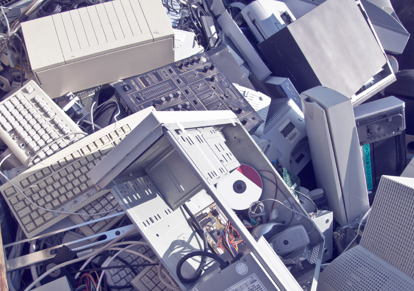

Global solutions to E-waste
One of the biggest problems with e-waste is that a lot of it, instead of being recycled, is shipped to developing countries that dispose of them improperly. A big factor that is helping to eliminate this e-waste problem is countries establishing penalties for improper disposal of e-waste. Countries like China, Taiwan, and Switzerland. Developing countries have organizations that aid with recycling of e-waste, but laws are needed to really solve this issue.

An example is Kenya, which has placed regulations on the importing and management of E-waste. The regulations they have implemented have already begun to benefit the environment. Less E-waste is being burned and is now being disassembled and recycled. This is a huge step for Kenya and many other countries need to follow suit. One of the most important ways to help solve global e-waste is actually through a local means.

When U.S. Consumers take action to seek out companies that can properly recycle their electronics, it keeps e-waste from being exported to other countries, creating less of a global problem. It is estimated that half of all U.S. e-waste is exported to developing countries. Proper disposal by consumers can help to drop this number.